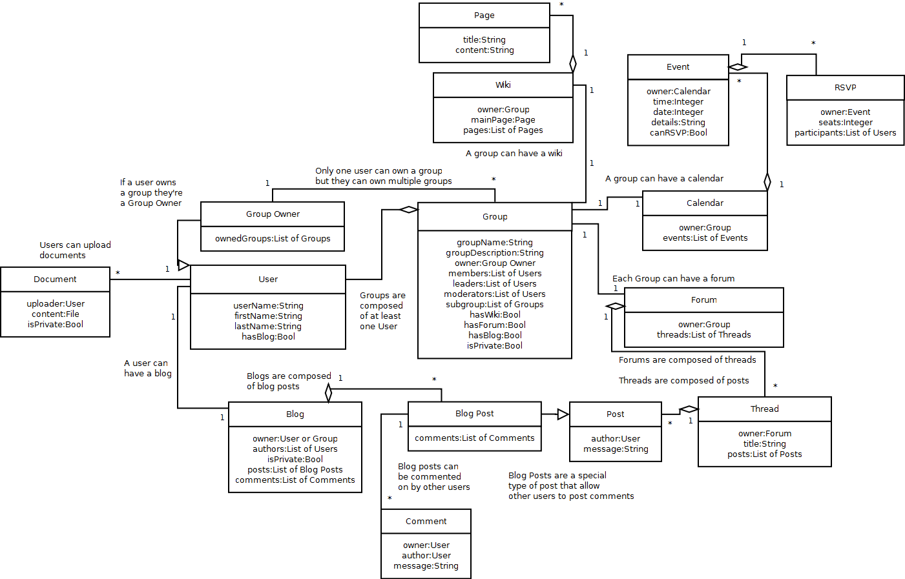

Group 5: Academic/Honorary
Master list of use cases our group came up with.
Alex's Class Diagram

User: a user in the gus system.
Group: a collection of users with related interests.
Group owner: a special type of user that owns a group.
Wiki: a wiki can be added to a group.
Page: a wiki is comprised of one main page and as many other pages as the group wants.
Calendar: a group can use a calendar to list events for that group.
Event: an event posted to the group's calendar.
RSVP: if it's possible to RSVP for an event, users can add themselves to a list for that event.
Forum: a group can have a forum for discussion amongst group members.
Thread: forums contain threads for threaded discussion.
Post: threads are comprised of posts made by users.
Blog: blogs can be used to post news updates by users or groups. They can be private to group members/friends or public for everyone to read.
Blog post: blog posts are a special type of post that can be commented on.
Comment: other users can post comments on a user's blog post.
Document: a file uploaded by a user. Can be private or public.
I spoke with the director of the University of Idaho Honor's Program, Stephan Flores.
At the moment, the UHP uses a combination of free software and mailing lists to communicate and manage its members. The UHP has a Google Calendar set up for managing events and uses Doodle to RSVP and manage participation for some of those events. One feature that the UHP expressed interest in is being able to check for scheduling conflicts between events before finalizing the time and date for a new event on the calendar. Most of the communication and file sharing done by the UHP is done through e-mail and mailing lists. At the beginning of each semester, they receive a list of students and e-mails for members of the UHP and they put all of those into a mailing list. There are also mailing lists for faculty members, graduate students, and undergrads split up by department. Because of how these mailing lists are set up and handled, receiving duplicate e-mails happens semi-often. Gus may be able to avoid that problem.
Overall, the UHP expressed interest in gus and the idea of combining all of the features they use into one package.